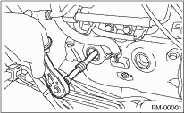

1. Remove the intake duct and intake chamber.
2. Disconnect the spark plug cord.
3. Remove the spark plug with a plug-wrench.

4. Install a new spark plug.
Spark plug:
2.5 L Non-turbo model
NGK: PFR5B-11
Spark plug gap:
1.0 — 1.1 mm (0.039 — 0.043 in)
5. Tighten the spark plug lightly with hand, and then secure with a plug-wrench to the specified torque.
Tightening torque:
21±3 N·m (2.14±0.31 kgf-m, 15.49±2.21 ft-lb)
NOTE:
• Be sure to place the gasket between the cylinder head and spark plug.
• If the torque wrench is not available, tighten the spark plug until gasket contacts cylinder head; then tighten further 1/4 to 1/2 turns.
1. Remove the spark plug. 
2. Install a new spark plug.
Spark plug:
2.0 L Non-turbo model
NGK: ILFR6B
2.5 L Turbo model
NGK: ILFR6B
Spark plug gap:
0.7 — 0.8 mm (0.028 — 0.031 in)